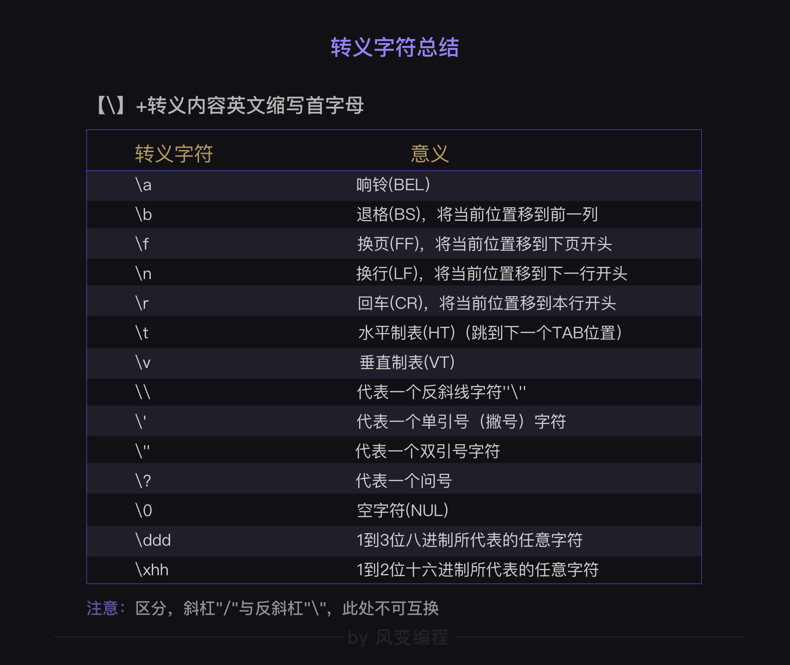
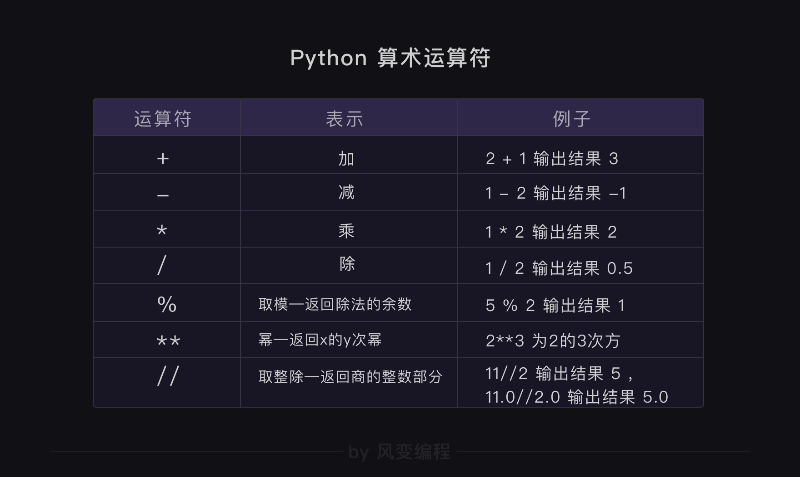
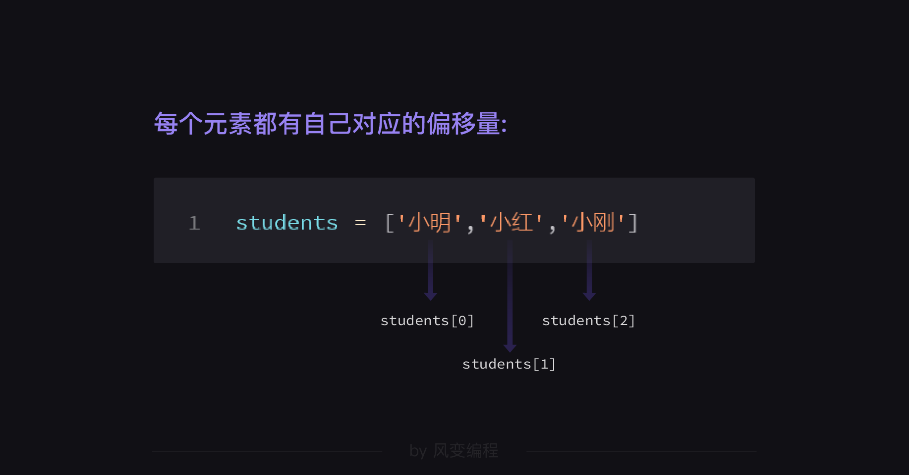
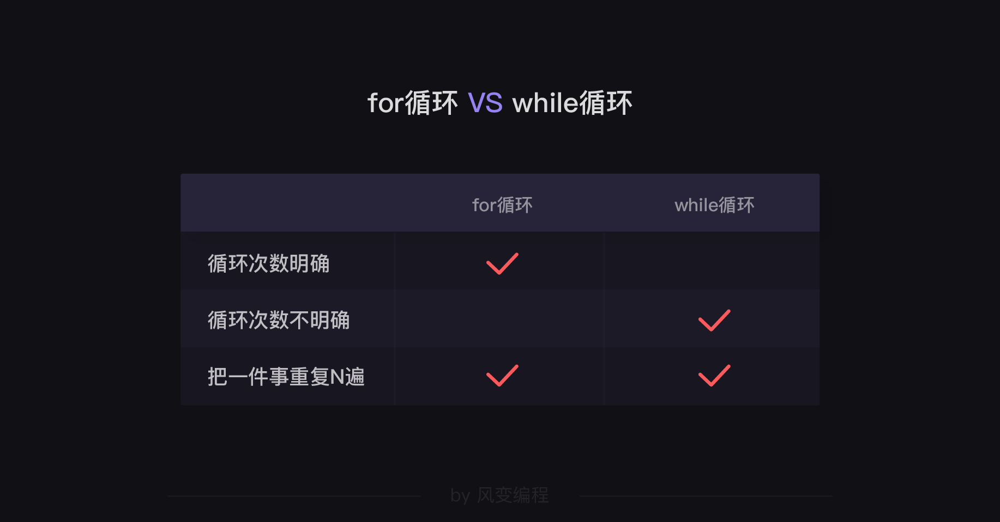
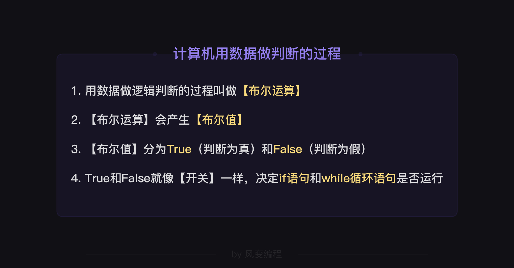
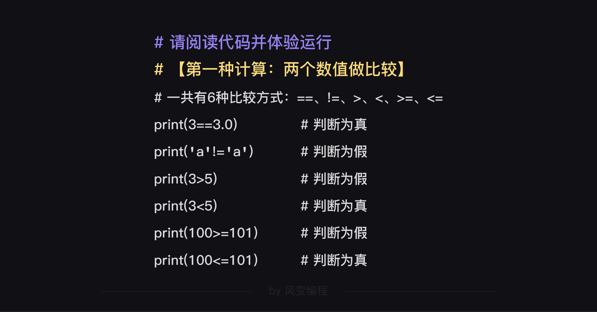
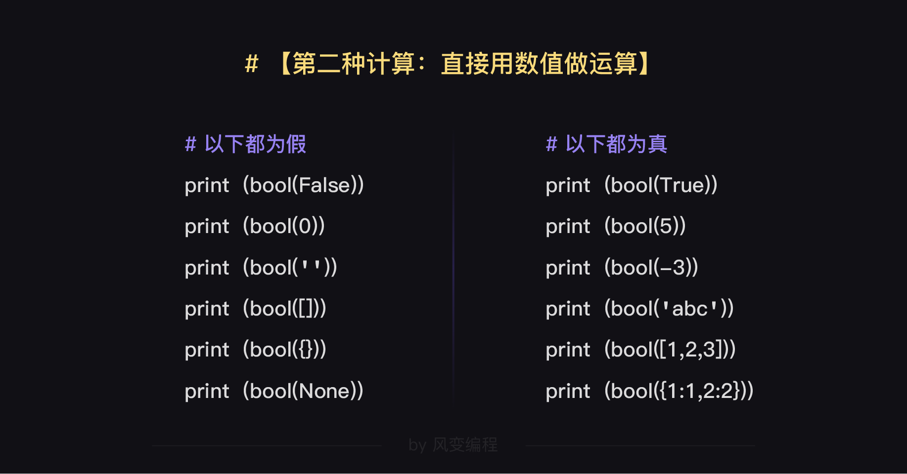
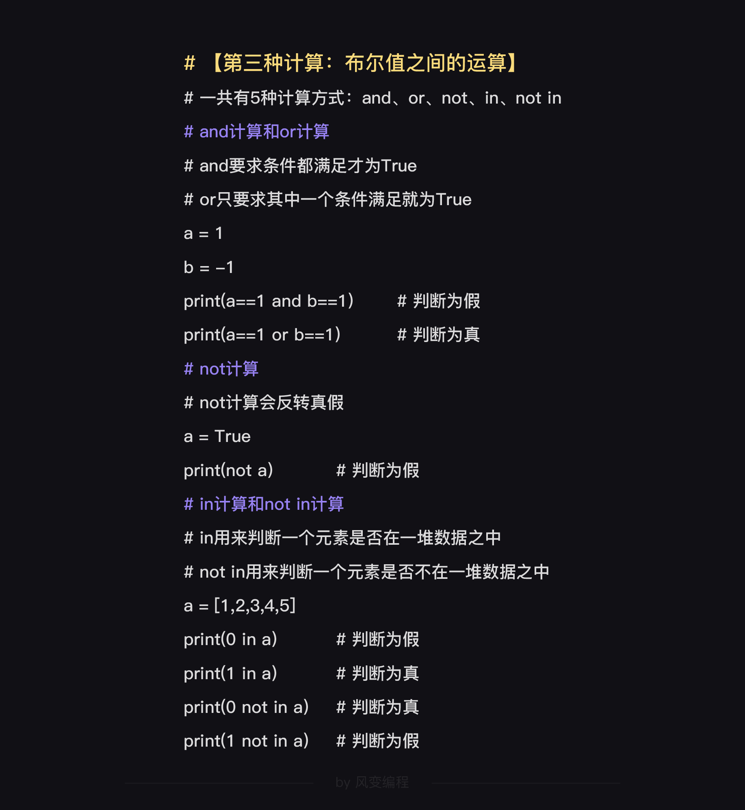

Python笔记
2019-08-19
基本内容来源于风变编程中的学习笔记，之后会根据日常接触的知识点进行更新。
1 输入与输出
1.1 输出：print()函数
用' '(单引号)," "（双引号，不是两个单引号）或''' '''（三引号，三个单引号）作为字符串格式：
Note:
括号内同时存在单双引号，使用双引号
" "包围。括号内有一大串文字，且实现
换行，有两种方法：
用
\n放置于每个新段的段首；在已分好段的文字前后使用三引号
''' '''包围。
备注：转义字符——用’ ’ + 需要转义的功能的英文首字母:

1.2 输入：input()函数
1.2.1 有问有答，有来有往
如果不输入，input( )大门会一直等待被输入。
1.2.2 赋值后使用
note:
返回类型为str。若需要整数型，可以转换类型：int(input())。
一般用于条件判断语句。
2 变量
2.1 命名规范
只能包含字母、数字和下划线；
不能以数字开头。
2.3 运算

3 数据类型与转换
3.1 查询数据类型 type( )
3.2 字符串 str( )
将其他类型转成字符串（也可以用’ ’直接转换字符内容)
Note：
数据拼接——只有字符串才可以拼接，用 ** + ** 链接。
不同数据类型，可以用 ** , ** 链接。
3.3 整数 int()
将其他类型转成整数：
整数字符串：int(‘123’) >> 123 #文字形式不可以转换
浮点数：int(2.1) >> 2
小数形式的字符串’1.11’，不可以直接用int()转换
3.4 浮点数 float():带小数点的数字
数字字符串：float(‘2’), float(‘2.1’)
整数：float(1)
3.5 列表list:[ ]
3.5.2 提取元素
提取单个元素：偏移量（offset, 从0开始）;
提取多个元素：左右空，取到头；取左不取右。

3.5.3 增／删元素
- 增：
list1.append(): 括号内只能放入一个元素 (one argument, 不是索引，而是元素本身的内容)，该元素可以是列表或字典；也可以直接赋值。
list1.extend(): 在某一列表末尾追加另一列表的值。
即：
append()内只能放置一个元素，且作为内容增加；
extend()则是作为一个序列增加。
list1=[1,2,3,4,5]
list1.append(6)
print(list1)
>> [1,2,3,4,5,6]
list1.append(6,7)
print(list1)
>> TypeError
#append() takes exactly one argument (2 given)
list1.append([7,8])
print(list1)
>> [1,2,3,4,5,6,[7,8]]
#若是extend()
list1.extend([7,8])
print(list1)
>> [1,2,3,4,5,6,7,8]
list1[7]=9
print(list1)
>> [1,2,3,4,5,6,[7,8],9]- 删：
del: 根据索引删除列表的元素，或者片段，或者整个列表（根据索引删除）；
pop: A.pop(key), key可以是 list1 偏移量 或者 dictionary 的 key (只能删除一个元素, a.pop()默认删除最后一个元素)
3.6 元组tuple：( )
基本定义：用()，若只有一个元素，以,结尾，比如tup1(30,)；
元素提取：采用偏移量，tuple1[0:]；
用法：支持嵌套，argument元素不可变，元素类型可以多样；
与list的区别在于，元组tuple的元素不可以变更。
3.7 字典dictionary：
3.7.1 基本定义
用{ }表示；
用,分割元素，有唯一的key;key和值用:隔开，值可以不唯一；
Note:
以上的key为’小明’，‘小红’，‘小刚’;
len()返回列表或字典的长度（即key的个数）。
3.7.3 增／删元素
增：dictionaryname[key]=value
删：del dictionaryname[key]
3.7.4 列表和字典的对比
| 列表list[1,2,3,4] | 元组tuple(1,2,3,4) | 字典dictionary{‘a’:1,‘b’:2} | |
|---|---|---|---|
| 定位方式 | 偏移量，list1[0] | 偏移量，tuple1[0] | key, dict[‘a’] |
| 排列方式 | 按顺序依次排列 | 按顺序依次排列 | 根据key排序 |
| 增、删、修改 | list.[new_key]=value, append(),extend(); del, pop(); key–>value | 元素不可更改 | dict.[new_key]=value, append(),extend(); del, pop(); key–>value |
| 可否嵌套 | 可 | 可 | 可 |
例子：
list11=[1,2,3,4,5]
print(list11[2])
>> 3
dictionary1={'a':1,'b':1,'c':2}
print(dictionary1['a'])
>> 1
list12=[5,4,3,2,1]
print(list11 == list12)
>> false
dictionary2={'c':2,'b':1,'a':1}
print(dictionary1 == dictionary2)
>> true#add
list1=[1,2,3]
list1[3]=4
print(list1)
>> [1,2,3,4]
dictionary={'a':1,'b':2}
dictionary['c']=3
print(dictionary)
>> {'a':1,'b':2,'c':3}
#delete
del list1[3]
print(list1)
>> [1,2,3]
del dictionary['a']
print(dictionary)
>> {'b':2,'c':3}
#nest
#先取最外层的定位，再取第二层，...，剥洋葱式解法
numbers=[[1,2,3,4],[5,6,7,8]]
print(numbers[1][3])
>> 8
groups={'first':{'a':1,'b':2,'c':3},'second':{'d':4,'e':5,'f':6}}
print(groups['second']['e'])
>> 54 条件语句
4.1 if 条件判断
4.1.1 条件判断
1.单向判断: if
1.双向判断: if…else(不需加条件，表示其他)…
1.多向判断: if…elif…(else…)
note: ...的内容需要缩进。
5 循环语句
5.1 for…in…循环语句
循环：执行重复性或规律性的任务 确定重复次数
5.1.1 基本定义
1.格式：冒号；缩进；重复执行的job
1.可以作为i的取值：string、list、dictionary（int、float不可以）；
for i in [1,2,3,4]:
print(i*5)
>> 5 10 15 20
for i in 5：
print(i)
>> error
for i in 5.2:
print(i)
>> error
dic={'a':'1','b':'3','c':'5'}
for i in dic:
print(dic[i])
>> 1 3 5
#这里的i是dic的key，按顺序提取。
for i in 'abc'
print(i)
>> a b c
#逐字读取
for i in 'abc'
print(i)
print(i)
>> a b c c
#未缩进的print执行的是i在最后的取值，也就是在执行完for循环后，当前的i值。error的部分可以改为：
5.1.2 与range()函数配合
1.range(x): 0 ~ x-1 的整数序列（表示取[0,x)的整数）; 1.range(a,b):a,…,b-1 （与偏移量一致，取头不取尾） 1.range(a,b,c):a,…,b-1 每个数间隔为c (不填时默认为1)
5.2 while循环
先赋值，后进条件，最后执行重复job。
条件为确定的某一范围，剩下的为开放性范围。
也可以执行重复性任务。
man = '' # 注：''代表空字符串
while man != '有': #注：!=代表不等于
man = input('有没有愿意为小龙女死的男人？没有的话就不能出古墓。')
print('小龙女可以出古墓门下山啦~')
#以上表示，如果input部分一直没有出现'有'，则会一直执行while的job；当出现了'有'，就不进入while循环，而是直接执行下一句print。5.2.1 for…in…和while…异同点
已知循环次数用for, 未知循环次数用while。

6 布尔运算
6.1 布尔值：用数据做判断
6.1.1 True和False（注意区分大小写）
6.1.2 总结
用数值做运算：同一个数据类型，除了假的（0，空，False等），其他都为真。




6.2 循环内的四种语句
6.2.1 break语句
只能在循环内使用 表示：while循环语句中，满足if条件时，则跳出循环
6.2.2 continue语句
只能在循环内使用 表示：while循环语句中，满足if条件时，则暂停目前的循环语句，重新开始循环